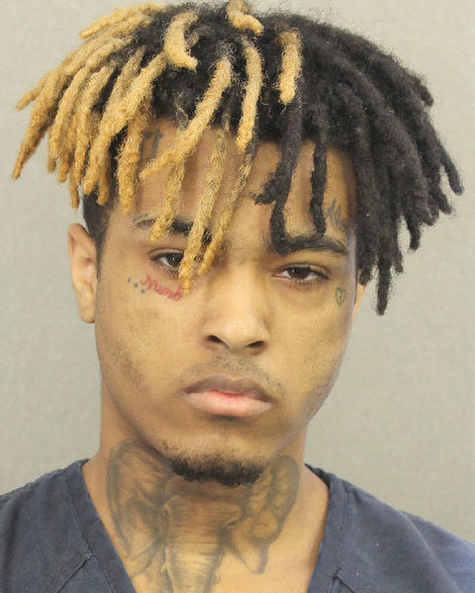

XXXTENTACION
Jahseh Dwayne Ricardo Onfroy (23. siječnja 1998. - 18. lipnja 2018.), poznat profesionalno pod nazivom XXXTentacion, (često stiliziran pod XXXTENTACION) [b] bio je američki reper, pjevač i tekstopisac. Iako je bio kontroverzna ličnost zbog svojih široko publiciranih pravnih problema, XXXTentacion je tijekom svoje kratke karijere stekao kult među mladim fanovima tijekom svoje glazbe depresije i otuđenja. Kritičari i obožavatelji često su ga pripisivali za njegovu glazbenu svestranost, a njegova glazba istraživala je emo, trap, lo-fi, indie rock, nu metal, hip hop, R&B i punk rock.
Rođen u Plantaciji na Floridi, XXXTentacion je veći dio djetinjstva proveo u Lauderhillu. Glazbu je počeo pisati nakon što je pušten iz maloljetničkog zatvora, a ubrzo je započeo svoju glazbenu karijeru na SoundCloudu 2013. godine, koristeći stilove i tehnike koji su bili nekonvencionalni u rap glazbi, poput distorzije i teških instrumenata podržanih gitarom, crpeći inspiraciju iz emocija trećeg vala. i grunge. 2014. godine osnovao je podzemni kolektiv Members Only, a zajedno s ostalim članovima kolektiva ubrzo je postao popularna figura u SoundCloud rapu, trap glazbenoj sceni koja uzima elemente lo-fi glazbe i oštrih 808-ih.

POVRATAK